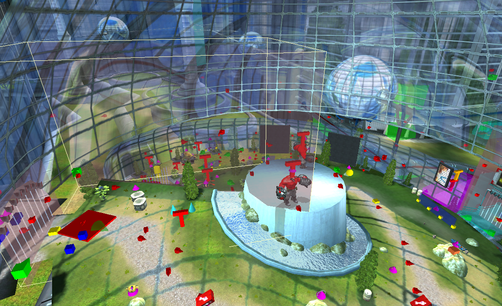
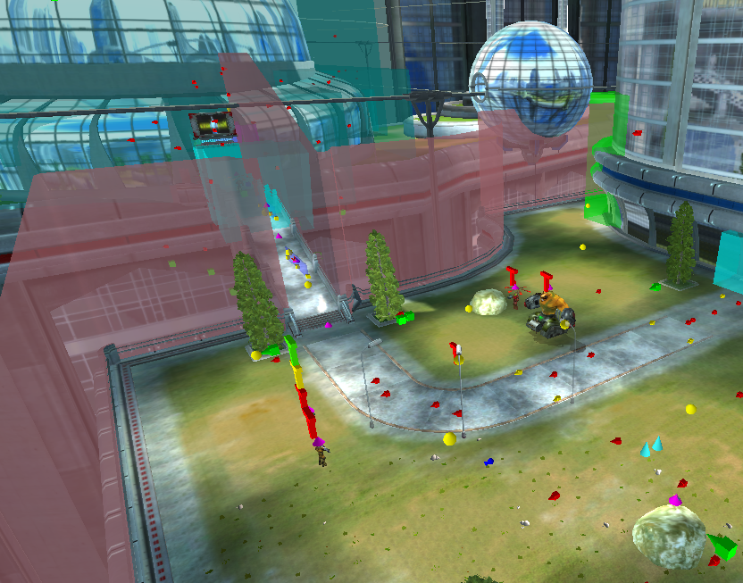
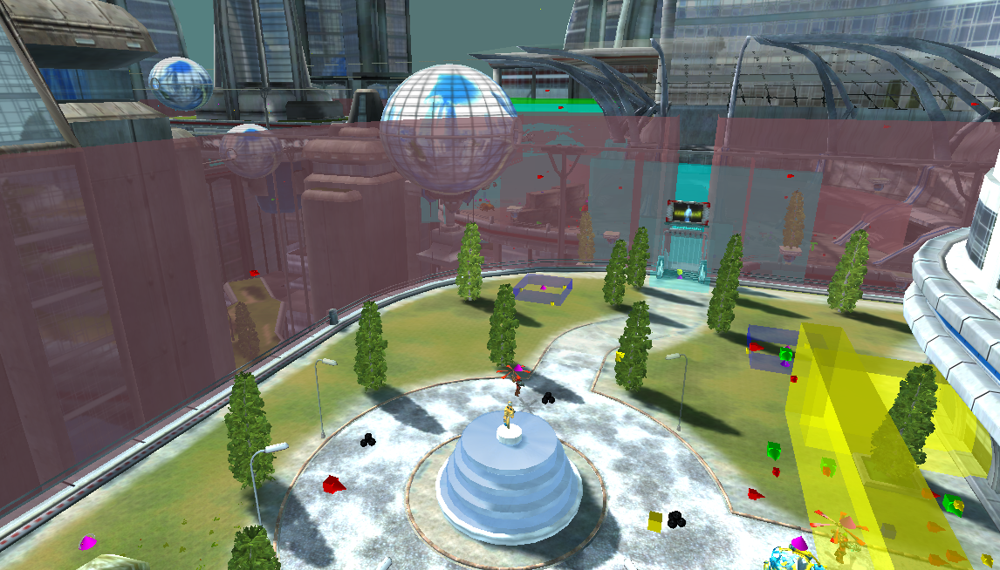
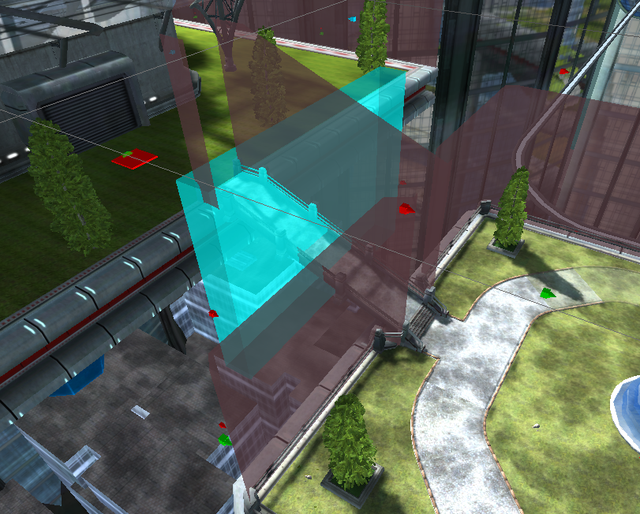

7.2 SHIELD GENERATOR
Estimated timesave over 2.080: 5+ minutes
Map: (Click to expand)

Chapter 9 - Platform where ends turret ride
Finished by hitting a trigger, meaning one can skip from chapter 1 straight to the end of the map.
Estimated timesave over 2.080: 5+ minutes
Map: (Click to expand)
Finished by hitting a trigger, meaning one can skip from chapter 1 straight to the end of the map.
Invisible wall A
In faint red, highlit in a yellow box, the invisible wall that prevents the player from skipping the spiral down the sphere.
Invisible wall B
The walls surrounding the first outdoor area. There are no invisible walls blocking the outside from the inside of the dome.
Invisible wall C
The walls surrounding the second outdoor area.
Chapter 9 End Trigger
This trigger transitions to the next level.
